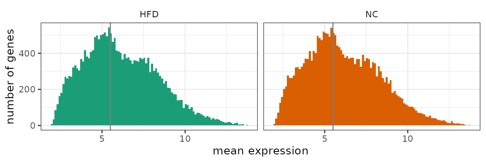
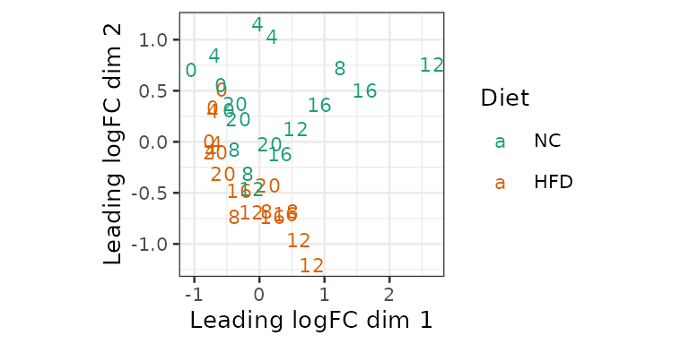

Analyzing rhythmic data with compareRhythms
Bharath Ananthasubramaniam
02 Jun 2022
Source:vignettes/UserGuide.Rmd
UserGuide.RmdThis package is designed to find features with altered circadian
rhythm parameters (amplitude and phase) between the
control and experimental groups. In this vignette, we will walk through
two examples that show the basic application of the
compareRhythms package to microarray and RNA-seq data.
Nevertheless, any rhythmic data can be analyzed using this package.
Usage summary
The analysis is run using a single function
compareRhythms(). To execute this function, the three
necessary ingredients are the timeseries data, the experimental design
and parameters to choose and tune the method. The output of the function
is a data.frame with the IDs of the differentially rhythmic
features, the category they are classified under and optionally the
rhythm parameters of the features in the two groups. The differential
rhythmicity categories are gain of,
loss of, change of, or
same rhythms (with respect to the reference/control
group).
Time series data and experimental design
Only two inputs are mandatory to run the workflows in this package.
A single (numeric) matrix combining both timeseries datasets. The rows of this matrix are the features and the columns are the different samples. The rownames of this data matrix provide the
idlist for the features.-
A data.frame specifying the experimental design (details regarding each sample) in order to interpret the data matrix.
- There must be one row in this data.frame describing each sample (column) in the data matrix.
- This data.frame must contain a numeric column named
timespecifying the time associated with the sample and a factor column namedgroupspecifying whether a sample belongs to the control or the experimental group. Thisgroupvariable must have only two levels with one chosen as the reference with respect to which the results are presented. - Optionally, a column named
batchcan be used to specify a categorical (factor) covariate representing an independent or confounding variable (Note: covariates cannot be included in all methods. More on that below). Currently, there is no capability to include continuous covariates in the analysis.
Choice of method
The package currently offers a choice of 6 different methods. We describe below the tuning parameters available for each method.
There are three parameters that are common to all methods.
period: This positive number is the period of the rhythms, whose amplitude and phase must be compared between the two timeseries datasets. Defaults to 24.amp_cutoff: Only features with a peak-to-trough amplitude greater than this positive number in at least one group are included in the differential rhythmicity results.just_classify: This boolean flag specifies if the amplitude and phase estimates of each differential rhythmic feature in the two groups (just_classify = FALSE) must be returned in addition to the list ofids and their classification into the differential rhythmicity categories.
The different approaches can be divided into model selection and the rest that are all implementations of hypothesis testing:
-
-
Model selection (
method = "mod_sel"(default)) -
The different categories of differentially rhythmic features are
represented by linear regression models that are fit to the data (Atger et al. 2015). The best model/category is
selected by an information theoretic
criterion. The quality of fit of the best category to the data is fine tuned usingschwarz_wt_cutoff.-
criterionis used to select the desired information criterion to pick the best model/category. “bic” (default) selects Bayesian Information Criterion (BIC) and “aic” selects Akaike Information Criterion (AIC). BIC penalizes model size more than AIC and hence favors smaller models. -
schwarz_wt_cutoff(default = 0.6) is a probability threshold for the weight of the best model/category. The weight of the best model/category (called Schwarz weight with BIC and Akaike weight with AIC) is the probability that the chosen category is the best category given the data and the other models/categories. Higher this number (between 0 and 1), more certain is the classification. But models that do not reach this threshold are left unclassified.
-
Use cases: This method can be used on any normalized data. Technically, the assumption that the noise/errors is/are normal at each sample and independent needs to be acceptable.
-
Model selection (
-
-
DODR (
method = "dodr") -
Rhythmic features in either group are first identified using rain followed by
filtering by rhythm amplitude (
amp_cutoff). The resulting subset of features are processed using DODR (Thaben and Westermark 2016), an R package to find the differentially rhythmic features. The features are classified after the fact into the 4 categories listed above.-
rhythm_fdris the threshold for pre-filtering rhythmic features in either group based on the multiple testing corrected p-value from rain. -
compare_fdris the threshold for selecting differentially rhythmic features using the multiple testing corrected p-values from DODR.
-
Use cases: This method can be used on any normalized data.
-
DODR (
-
-
limma (
method = "limma") -
This is an implementation of DODR using the linear
modeling approach for microarrays in limma (Ritchie et al. 2015). The analysis follows the
same steps with the difference that the filtering for rhythmic features
in either group can be accomplished in a single test and differential
rhythmicity test is also achieved in the same framework by comparing
rhythm parameters (amplitude and phase).
-
rhythm_fdris the threshold for pre-filtering rhythmic features in either group based on the multiple testing corrected p-value. -
compare_fdris the threshold for selecting differentially rhythmic features using the multiple testing corrected p-values -
robustis a boolean to make the noise estimates for individual features in limma robust against outliers (seeeBayesin limma for details).
-
Use cases: This method is to be used only on log normalized microarray data (see limma for details).
-
limma (
-
-
voom (
method = "voom") -
This is a variation of limma to also process RNA-seq
data with the same pipeline. Count data are preprocessed using
voomand then analyzed using the limma method above.-
rhythm_fdr(see limma) -
compare_fdr(see limma) -
robust(see limma) -
outliersis a boolean to downweight outlier samples in the analysis. (seevoomWithQualityWeightsin limma for details)
-
Use cases: This method is to be used with count data from an RNA-seq experiment. Count data from aligment (STAR, TopHat2) followed by quantification (htseq-count, summarizeOverlaps, featureCounts) can be directly used. If tximport is used to import data, then use counts after setting
countsFromAbundance = "lengthScaledTPM" or "scaledTPM"in thetximport()call. -
voom (
-
-
DESeq2 (
method = "deseq2") -
This is the limma workflow adapted to process RNA-seq
data according to DESeq2 (Love, Huber, and Anders 2014).
-
rhythm_fdr(see limma) -
compare_fdr(see limma) -
lengthis an optional matrix (with the same size as data) containing the average transcript length of each gene in each sample.
-
Use cases: This method is to be used with count data from an RNA-seq experiment. Count data from aligment (STAR, TopHat2) followed by quantification (htseq-count, summarizeOverlaps, featureCounts) can be directly used. If tximport is used to import data, then use
countsandlengthobtained from thetximport()call withcountsFromAbundance = "no". -
DESeq2 (
-
-
edgeR (
method = "edger") -
This is the limma workflow adapted to process RNA-seq
data according to edgeR (Robinson, McCarthy, and Smyth 2010).
-
rhythm_fdr(see limma) -
compare_fdr(see limma) -
length(see DESeq2)
-
Use cases: This method is to be used with count data from an RNA-seq experiment. Count data from aligment (STAR, TopHat2) followed by quantification (htseq-count, summarizeOverlaps, featureCounts) can be directly used. If tximport is used to import data, then use
countsandlengthobtained from thetximport()call withcountsFromAbundance = "no". -
edgeR (
-
Cosinor (
method = "cosinor"): This implements the simple classical cosinor analysis and includes an option to deal with longitudinal data (which is common in data from human studies).-
rhythm_fdr(see limma) -
compare_fdr(see limma) -
longitudinalis a boolean to switch between independent time samples (FALSE, default) or repeated-measures samples (TRUE).
Use cases: This method can be used for any normalized dataset of moderate size (few hundreds of features). This analysis assumes that noise in the data is Gaussian and that there are no trends in the measurements across time. The
longitudinal = TRUErequires the user to provide a factor columnIDin theexp_designwith the identity of each experimental unit that is repeatedly measured (Note: this analysis uses mixed-model framework of lme4). -
Example 1: Microarray data
We analyze first the microarray data on the changes in circadian
liver transcriptome under high fat diet (HFD) with respect to normal
chow (NC) (Eckel-Mahan et al. 2013). This
data is provided with this package as a 23060x36 matrix called
high_fat_diet_ma. Liver transcripts were quantified every
4h for 24h (6 samples) and the 2 different conditions with 3 biological
replicates each (36=6x2x3). maEndToEnd
describes how to perform quality control and normalization for
microarrays.
head(high_fat_diet_ma[,1:6])
#> NC_ZT0_1 NC_ZT0_2 NC_ZT0_3 HFD_ZT0_1 HFD_ZT0_2 HFD_ZT0_3
#> ENSMUSG00000000001 9.404793 9.328668 9.310453 9.335252 9.470418 9.511085
#> ENSMUSG00000000003 2.470968 2.358439 2.502844 2.530175 2.453542 2.562028
#> ENSMUSG00000000028 6.017191 5.769798 5.707153 6.015197 5.702113 5.751801
#> ENSMUSG00000000031 5.317120 5.010673 5.068763 5.107669 5.193487 4.935580
#> ENSMUSG00000000037 3.672698 3.670284 3.971859 3.556922 3.798398 3.641636
#> ENSMUSG00000000049 12.677798 12.739597 12.590512 12.699638 12.782454 12.613611
colnames(high_fat_diet_ma)
#> [1] "NC_ZT0_1" "NC_ZT0_2" "NC_ZT0_3" "HFD_ZT0_1" "HFD_ZT0_2"
#> [6] "HFD_ZT0_3" "NC_ZT4_1" "NC_ZT4_2" "NC_ZT4_3" "HFD_ZT4_1"
#> [11] "HFD_ZT4_2" "HFD_ZT4_3" "NC_ZT8_1" "NC_ZT8_2" "NC_ZT8_3"
#> [16] "HFD_ZT8_1" "HFD_ZT8_2" "HFD_ZT8_3" "NC_ZT12_1" "NC_ZT12_2"
#> [21] "NC_ZT12_3" "HFD_ZT12_1" "HFD_ZT12_2" "HFD_ZT12_3" "NC_ZT16_1"
#> [26] "NC_ZT16_2" "NC_ZT16_3" "HFD_ZT16_1" "HFD_ZT16_2" "HFD_ZT16_3"
#> [31] "NC_ZT20_1" "NC_ZT20_2" "NC_ZT20_3" "HFD_ZT20_1" "HFD_ZT20_2"
#> [36] "HFD_ZT20_3"We will first construct the data.frame of the experimental design. In this simple example, the required experimental design information is encoded in the column names, which we extract.
exp_design <- str_split(colnames(high_fat_diet_ma), "_", simplify = TRUE) # split the names by _
exp_design <- as.data.frame(exp_design, stringsAsFactors=TRUE) # convert from matrix to data.frame
colnames(exp_design) <- c("group", "time", "rep") # name the columns
exp_design$time <- as.numeric(sub("ZT", "", exp_design$time)) # remove ZT prefix and make numeric
head(exp_design)
#> group time rep
#> 1 NC 0 1
#> 2 NC 0 2
#> 3 NC 0 3
#> 4 HFD 0 1
#> 5 HFD 0 2
#> 6 HFD 0 3
str(exp_design) # view data type of each column
#> 'data.frame': 36 obs. of 3 variables:
#> $ group: Factor w/ 2 levels "HFD","NC": 2 2 2 1 1 1 2 2 2 1 ...
#> $ time : num 0 0 0 0 0 0 4 4 4 4 ...
#> $ rep : Factor w/ 3 levels "1","2","3": 1 2 3 1 2 3 1 2 3 1 ...So exp_design has the two required columns
group and time. Furthermore, group is (as
required) a factor with only 2 levels and time is numeric. We
can also check what the reference group is.
levels(exp_design$group) # the first level is the reference group
#> [1] "HFD" "NC"
exp_design$group <- relevel(exp_design$group, "NC") # choose NC as the correct reference groupIt is also useful at this point to check whether there are any outlier samples (columns) using PCA.
pca_ma <- prcomp(t(high_fat_diet_ma), scale. = FALSE)
varExp <- round(pca_ma$sdev^2/sum(pca_ma$sdev^2)*100, 1)
df <- data.frame(PC1 = pca_ma$x[,1], PC2 = pca_ma$x[,2],
diet = exp_design$group,
time = exp_design$time)
ggplot(df, aes(PC1, PC2)) + geom_text(aes(label=time, color=diet), size=3) +
theme_bw(base_size=10) + scale_color_brewer(name = "Diet", palette="Dark2") +
theme(aspect.ratio=1) + xlab(paste0("PC1, VarExp: ", varExp[1], "%")) +
ylab(paste0("PC2, VarExp: ", varExp[2], "%"))The first principal component (PC) seems to capture the time variation and the second PC captures differences in diet. Therefore, the main variations we are interested in are captured in top 2 PCs. There appear to be no obvious outliers.
All 23060 genes (features) in the mouse transcriptome
(according to Ensembl) are included in the data. We want to keep only
the strongly enough expressed genes for differential rhythmicity
analysis.
grp_ids <- levels(exp_design$group) # extract the names of the two groups
mean_g1 <- rowMeans(high_fat_diet_ma[, exp_design$group == grp_ids[1]]) # mean expression of group 1
mean_g2 <- rowMeans(high_fat_diet_ma[, exp_design$group == grp_ids[2]]) # mean expression of group 2
df <- bind_rows(data.frame(mean=mean_g1, group=grp_ids[1]),
data.frame(mean=mean_g2, group=grp_ids[2])) # data.frame for plotting
ggplot(df) +
stat_bin(aes(x=mean, fill=group), bins = 100) + facet_wrap(~group) + theme_bw(base_size=10) +
geom_vline(xintercept = 5.5, color="grey50") + theme(strip.background = element_blank()) +
xlab("mean expression") + guides(fill="none") + ylab("number of genes") +
scale_fill_brewer(palette="Dark2")
keep <- (mean_g1 > 5.5) | (mean_g2 > 5.5)
table(keep) # summary of how many genes will be kept after filtering
#> keep
#> FALSE TRUE
#> 9898 13162
expr_filtered <- high_fat_diet_ma[keep, ]Before we run compareRhythms() on this data let us check
that * the number of columns in expr_filtered match number
of rows of exp_design. * expr_filtered is a
matrix and exp_design is a data.frame
nrow(exp_design) == ncol(expr_filtered)
#> [1] TRUE
class(exp_design)
#> [1] "data.frame"
class(expr_filtered)
#> [1] "matrix" "array"We will analyze this microarray data using model selection
first. Log2 normalized data such as high_fat_diet_ma can be
directly used.
results <- compareRhythms(expr_filtered, exp_design = exp_design,
period = 24, method = "mod_sel") # run with default parameters for schwarz_wt_cutoff and criterion
head(results)
#> id category
#> 1 ENSMUSG00000000001 arrhy
#> 2 ENSMUSG00000000028 arrhy
#> 3 ENSMUSG00000000049 arrhy
#> 4 ENSMUSG00000000056 change
#> 5 ENSMUSG00000000058 arrhy
#> 6 ENSMUSG00000000078 arrhy
table(results$category) # number of genes in the different categories
#>
#> arrhy loss gain same change
#> 8911 137 27 501 158For model selection alone, the number of arrhythmic features is
returned, since some features that have weights less than
schwarz_wt_cutoff are unclassified. Here,
13162 - 9734= 3428 genes are left
unclassified.
If the peak-to-trough amplitude and peak phase (acrophase) estimates are desired,
results <- compareRhythms(expr_filtered, exp_design = exp_design, period = 24,
method = "mod_sel", just_classify = FALSE) # run with default parameters for schwarz_wt_cutoff and criterion
head(results)
#> id category NC_amp NC_phase HFD_amp HFD_phase weights
#> 1 ENSMUSG00000000001 arrhy 0.000000 0.000000 0.0000000 0.000000 0.7949295
#> 2 ENSMUSG00000000028 arrhy 0.000000 0.000000 0.0000000 0.000000 0.7822633
#> 3 ENSMUSG00000000049 arrhy 0.000000 0.000000 0.0000000 0.000000 0.6327680
#> 4 ENSMUSG00000000056 change 1.097253 2.373042 0.7517809 2.180985 0.6574918
#> 5 ENSMUSG00000000058 arrhy 0.000000 0.000000 0.0000000 0.000000 0.8867482
#> 6 ENSMUSG00000000078 arrhy 0.000000 0.000000 0.0000000 0.000000 0.6069374The amplitude is the units of the data (for this method) and phase is
in radians. To get the phase in h, multiply the phase estimates by
period/(2*pi).
Next, we analyze the data using the DODR method. We only
show entire results (with just_classify = FALSE) for
simplicity.
results <- compareRhythms(expr_filtered, exp_design = exp_design, period = 24,
method = "dodr", just_classify = FALSE) # run with default parameters
head(results)
#> id category rhythmic_in_NC rhythmic_in_HFD diff_rhythmic
#> 1 ENSMUSG00000000056 same TRUE TRUE FALSE
#> 2 ENSMUSG00000000555 same TRUE TRUE FALSE
#> 3 ENSMUSG00000000567 same TRUE TRUE FALSE
#> 4 ENSMUSG00000000708 same TRUE FALSE FALSE
#> 5 ENSMUSG00000000876 same TRUE TRUE FALSE
#> 6 ENSMUSG00000001018 same TRUE FALSE FALSE
#> NC_amp NC_phase HFD_amp HFD_phase adj_p_val_NC adj_p_val_HFD
#> 1 1.0972527 2.3730421 0.75178092 2.180985 1.088656e-05 9.814312e-06
#> 2 1.1161226 5.5799337 0.90190671 5.400475 2.045434e-05 2.755708e-05
#> 3 0.8647148 0.2533993 0.62547925 6.263871 4.117639e-04 1.503105e-03
#> 4 0.5127966 2.4419457 0.04522975 2.532181 2.210451e-03 9.421081e-01
#> 5 0.7570742 5.9485326 0.76704298 5.346225 3.682985e-05 8.200630e-05
#> 6 0.6343907 1.3344650 0.34417635 1.403223 2.285075e-03 3.077466e-03
#> adj_p_val_dodr
#> 1 0.27170004
#> 2 0.48350547
#> 3 0.48681880
#> 4 0.07669958
#> 5 0.05815103
#> 6 0.33171207
table(results$category) # number of genes in the different categories
#>
#> change gain loss same
#> 39 6 32 1157In addition to the rhythm parameters (amplitude and phase), there are
boolean columns stating if the feature is rhythmic in NC and HFD and
whether the feature is also differentially rhythmic. These are derived
using tuning parameters rhythm_fdr and
compare_fdr and the adjusted p-values for the two
rhythmicity tests using RAIN and differential rhythmicity test from
DODR.
Recall that the previous two approaches are not specific to microarray data. Finally, we analyze this data using the linear modeling framework of limma designed for microarray analysis.
results <- compareRhythms(expr_filtered, exp_design = exp_design, period = 24,
method = "limma", just_classify = FALSE) # run with default parameters
head(results)
#> id category rhythmic_in_NC rhythmic_in_HFD diff_rhythmic
#> 1 ENSMUSG00000000056 same TRUE TRUE FALSE
#> 2 ENSMUSG00000000303 same FALSE TRUE FALSE
#> 3 ENSMUSG00000000555 same TRUE TRUE FALSE
#> 4 ENSMUSG00000000567 same TRUE TRUE FALSE
#> 5 ENSMUSG00000000708 same TRUE FALSE FALSE
#> 6 ENSMUSG00000000876 same TRUE TRUE FALSE
#> NC_amp NC_phase HFD_amp HFD_phase adj_p_val_NC_or_HFD adj_p_val_DR
#> 1 1.0972527 2.3730421 0.75178092 2.18098503 1.906244e-11 0.12104887
#> 2 0.4474557 5.8966561 0.85843846 0.02256061 2.131371e-02 0.47497910
#> 3 1.1161226 5.5799337 0.90190671 5.40047547 2.510419e-11 0.34303641
#> 4 0.8647148 0.2533993 0.62547925 6.26387110 1.970017e-05 0.47532705
#> 5 0.5127966 2.4419457 0.04522975 2.53218127 2.401673e-03 0.06055589
#> 6 0.7570742 5.9485326 0.76704298 5.34622495 1.126906e-09 0.05594469
table(results$category) # number of genes in the different categories
#>
#> change gain loss same
#> 46 9 33 1025The returned columns are similar to that from DODR (as they are both based on the same hypothesis testing approach). The only difference is that the test for rhythmicity in either group can performed using a single test, whose adjusted p-value is returned. The differential rhythmicity test compares circadian parameters (as coefficients of a harmonic regression) between the two groups. The boolean columns are constructed (as before) using these p-values. Moreover, due to the similarity of approaches the results of the analyses are very similar.
We can also vary the parameters amp_cutoff,
compare_fdr and rhythm_fdr as necessary.
results <- compareRhythms(expr_filtered, exp_design = exp_design, period = 24,
method = "limma", just_classify = TRUE, amp_cutoff = 0.1)
table(results$category)
#>
#> change gain loss same
#> 62 1 1 3118
results <- compareRhythms(expr_filtered, exp_design = exp_design, period = 24,
method = "limma", just_classify = TRUE, rhythm_fdr = 0.1)
table(results$category)
#>
#> change gain loss same
#> 41 8 30 1122
results <- compareRhythms(expr_filtered, exp_design = exp_design, period = 24,
method = "limma", just_classify = TRUE, compare_fdr = 0.1)
table(results$category)
#>
#> change gain loss same
#> 97 19 80 917Example 2: RNA-seq data
We next analyze an RNA-sequencing dataset comparing the effect of a
high fat diet on the mouse liver transcriptome with the same
experimental design (Quagliarini et al.
2019). This data too is provided with this package as a 37310x36
matrix called high_fat_diet_rnaseq. We follow a similar
sequence of steps as for microarrays in Example 1.
head(high_fat_diet_rnaseq[, 1:6])
#> HFD_ZT0_1 HFD_ZT0_2 HFD_ZT0_3 HFD_ZT4_1 HFD_ZT4_2
#> ENSMUSG00000090025.1 0 0 0 0 0
#> ENSMUSG00000064842.1 0 0 0 0 0
#> ENSMUSG00000051951.5 0 0 0 0 0
#> ENSMUSG00000089699.1 0 0 0 0 0
#> ENSMUSG00000088390.1 0 0 0 0 0
#> ENSMUSG00000089420.1 0 0 0 0 0
#> HFD_ZT4_3
#> ENSMUSG00000090025.1 0
#> ENSMUSG00000064842.1 0
#> ENSMUSG00000051951.5 2
#> ENSMUSG00000089699.1 0
#> ENSMUSG00000088390.1 0
#> ENSMUSG00000089420.1 0
colnames(high_fat_diet_rnaseq)
#> [1] "HFD_ZT0_1" "HFD_ZT0_2" "HFD_ZT0_3" "HFD_ZT4_1" "HFD_ZT4_2"
#> [6] "HFD_ZT4_3" "HFD_ZT8_1" "HFD_ZT8_2" "HFD_ZT8_3" "HFD_ZT12_1"
#> [11] "HFD_ZT12_2" "HFD_ZT12_3" "HFD_ZT16_1" "HFD_ZT16_2" "HFD_ZT16_3"
#> [16] "HFD_ZT20_1" "HFD_ZT20_2" "HFD_ZT20_3" "NC_ZT0_1" "NC_ZT0_2"
#> [21] "NC_ZT0_3" "NC_ZT4_1" "NC_ZT4_2" "NC_ZT4_3" "NC_ZT8_1"
#> [26] "NC_ZT8_2" "NC_ZT8_3" "NC_ZT12_1" "NC_ZT12_2" "NC_ZT12_3"
#> [31] "NC_ZT16_1" "NC_ZT16_2" "NC_ZT16_3" "NC_ZT20_1" "NC_ZT20_2"
#> [36] "NC_ZT20_3"We will next construct the data.frame of the experimental design from the data column names. As before, we fix “NC” to be the reference level for factor group column.
exp_design <- str_split(colnames(high_fat_diet_rnaseq), "_", simplify = TRUE) # split the names by _
exp_design <- as.data.frame(exp_design, stringsAsFactors=TRUE) # convert from matrix to data.frame
colnames(exp_design) <- c("group", "time", "rep") # name the columns
exp_design$time <- as.numeric(sub("ZT", "", exp_design$time)) # remove ZT prefix and make numeric
head(exp_design)
#> group time rep
#> 1 HFD 0 1
#> 2 HFD 0 2
#> 3 HFD 0 3
#> 4 HFD 4 1
#> 5 HFD 4 2
#> 6 HFD 4 3
str(exp_design) # view data type of each column
#> 'data.frame': 36 obs. of 3 variables:
#> $ group: Factor w/ 2 levels "HFD","NC": 1 1 1 1 1 1 1 1 1 1 ...
#> $ time : num 0 0 0 4 4 4 8 8 8 12 ...
#> $ rep : Factor w/ 3 levels "1","2","3": 1 2 3 1 2 3 1 2 3 1 ...
levels(exp_design$group) # the first level is the reference group
#> [1] "HFD" "NC"
exp_design$group <- relevel(exp_design$group, "NC") # choose NC as the correct reference groupNext, the data matrix must be filtered down to include only
sufficiently expressed genes. We will used a convenient
function filterByExpr() in edgeR to select genes
that have sufficiently expression (20 counts at the median library size
in 70% of the samples in each group).
keep <- filterByExpr(high_fat_diet_rnaseq, group = exp_design$group, min.count=20)
table(keep) # view the number of genes retained.
#> keep
#> FALSE TRUE
#> 24375 12935
counts <- high_fat_diet_rnaseq[keep, ]At this point, we would like to ensure that there are no outlier samples. We are using the utilities provided by edgeR but you can use the steps in the DESeq2 vignette instead.
y_explore <- DGEList(counts=counts, group = exp_design$group)
y_explore <- calcNormFactors(y_explore)
mdsscale <- plotMDS(y_explore, plot = FALSE)
df <- data.frame(X = mdsscale$x, Y = mdsscale$y,
diet = exp_design$group,
time = exp_design$time)
ggplot(df, aes(X, Y)) + geom_text(aes(label=time, color=diet), size=3) +
theme_bw(base_size=10) + scale_color_brewer(name = "Diet", palette="Dark2") +
theme(aspect.ratio=1) + xlab("Leading logFC dim 1") + ylab("Leading logFC dim 2")
The samples appear to separate into the two diet groups. A ZT12 sample under NC is likely an outlier.
ind <- which.max(df$X) # find sample with the largest X deviation (our outlier)
counts_no_outlier <- counts[, -ind] # remove that sample
dim(counts_no_outlier)
#> [1] 12935 35
nrow(exp_design) == ncol(counts_no_outlier) #input-check
#> [1] FALSEThe experimental design now does not match the count matrix after we removed the outlier. We have to also remove this sample from the exp_design.
exp_design_no_outlier <- exp_design[-ind, ]
nrow(exp_design_no_outlier) == ncol(counts_no_outlier) #input-check
#> [1] TRUENow, the data is ready for compareRhythms. We can use
the voom, DESeq2 or edgeR.
results1 <- compareRhythms(counts_no_outlier, exp_design_no_outlier, method = "voom") # with default parameters
table(results1$category)
#>
#> change loss same
#> 24 5 2506
results2 <- compareRhythms(counts_no_outlier, exp_design_no_outlier, method = "deseq2") # with default parameters
table(results2$category)
#>
#> change gain loss same
#> 68 17 16 2789
results3 <- compareRhythms(counts_no_outlier, exp_design_no_outlier, method = "edger") # with default parameters
table(results3$category)
#>
#> change gain loss same
#> 20 1 4 2642The voom analysis can take care of outlier samples (without
removing the outlier samples) by setting outliers=TRUE.
This is generally more powerful than removing the outlier sample.
results4 <- compareRhythms(counts, exp_design, method = "voom", outliers = TRUE) # with default parameters
table(results4$category)
#>
#> change gain loss same
#> 125 41 32 2943Of course, these hypothesis-testing based methods can be fine tuned
by changing compare_fdr, rhythm_fdr and
amp_cutoff.
It is also possible to process this data using model selection after the data are normalized. We use the tools in edgeR to compute the normalized log counts per million expression of the data and then apply model selection as in Example 1.
y <- DGEList(counts_no_outlier)
y <- calcNormFactors(y)
results5 <- compareRhythms(cpm(y, log = TRUE), exp_design_no_outlier, method = "mod_sel") # with default parameters
table(results5$category)
#>
#> arrhy loss gain same change
#> 7070 112 295 1519 172Session Information
#> R version 4.5.1 (2025-06-13)
#> Platform: x86_64-pc-linux-gnu
#> Running under: Ubuntu 24.04.2 LTS
#>
#> Matrix products: default
#> BLAS: /usr/lib/x86_64-linux-gnu/openblas-pthread/libblas.so.3
#> LAPACK: /usr/lib/x86_64-linux-gnu/openblas-pthread/libopenblasp-r0.3.26.so; LAPACK version 3.12.0
#>
#> locale:
#> [1] LC_CTYPE=C.UTF-8 LC_NUMERIC=C LC_TIME=C.UTF-8
#> [4] LC_COLLATE=C.UTF-8 LC_MONETARY=C.UTF-8 LC_MESSAGES=C.UTF-8
#> [7] LC_PAPER=C.UTF-8 LC_NAME=C LC_ADDRESS=C
#> [10] LC_TELEPHONE=C LC_MEASUREMENT=C.UTF-8 LC_IDENTIFICATION=C
#>
#> time zone: UTC
#> tzcode source: system (glibc)
#>
#> attached base packages:
#> [1] stats4 stats graphics grDevices utils datasets methods
#> [8] base
#>
#> other attached packages:
#> [1] DESeq2_1.48.1 SummarizedExperiment_1.38.1
#> [3] Biobase_2.68.0 MatrixGenerics_1.20.0
#> [5] matrixStats_1.5.0 GenomicRanges_1.60.0
#> [7] GenomeInfoDb_1.44.0 IRanges_2.42.0
#> [9] S4Vectors_0.46.0 BiocGenerics_0.54.0
#> [11] generics_0.1.4 edgeR_4.6.3
#> [13] limma_3.64.1 lubridate_1.9.4
#> [15] forcats_1.0.0 stringr_1.5.1
#> [17] dplyr_1.1.4 purrr_1.1.0
#> [19] readr_2.1.5 tidyr_1.3.1
#> [21] tibble_3.3.0 ggplot2_3.5.2
#> [23] tidyverse_2.0.0 compareRhythms_1.1.0
#>
#> loaded via a namespace (and not attached):
#> [1] tidyselect_1.2.1 DODR_0.99.2 farver_2.1.2
#> [4] fastmap_1.2.0 digest_0.6.37 timechange_0.3.0
#> [7] lifecycle_1.0.4 survival_3.8-3 Rfit_0.27.0
#> [10] statmod_1.5.0 magrittr_2.0.3 compiler_4.5.1
#> [13] rlang_1.1.6 sass_0.4.10 tools_4.5.1
#> [16] yaml_2.3.10 knitr_1.50 S4Arrays_1.8.1
#> [19] labeling_0.4.3 DelayedArray_0.34.1 npsm_2.0.0
#> [22] plyr_1.8.9 RColorBrewer_1.1-3 BiocParallel_1.42.1
#> [25] abind_1.4-8 withr_3.0.2 desc_1.4.3
#> [28] grid_4.5.1 multtest_2.64.0 scales_1.4.0
#> [31] MASS_7.3-65 cli_3.6.5 rmarkdown_2.29
#> [34] crayon_1.5.3 ragg_1.4.0 httr_1.4.7
#> [37] tzdb_0.5.0 cachem_1.1.0 splines_4.5.1
#> [40] assertthat_0.2.1 parallel_4.5.1 XVector_0.48.0
#> [43] vctrs_0.6.5 Matrix_1.7-3 jsonlite_2.0.0
#> [46] hms_1.1.3 systemfonts_1.2.3 locfit_1.5-9.12
#> [49] jquerylib_0.1.4 glue_1.8.0 pkgdown_2.1.3
#> [52] codetools_0.2-20 stringi_1.8.7 gtable_0.3.6
#> [55] UCSC.utils_1.4.0 gmp_0.7-5 pillar_1.11.0
#> [58] htmltools_0.5.8.1 GenomeInfoDbData_1.2.14 R6_2.6.1
#> [61] rain_1.42.0 textshaping_1.0.1 evaluate_1.0.4
#> [64] lattice_0.22-7 bslib_0.9.0 class_7.3-23
#> [67] Rcpp_1.1.0 SparseArray_1.8.0 xfun_0.52
#> [70] fs_1.6.6 pkgconfig_2.0.3